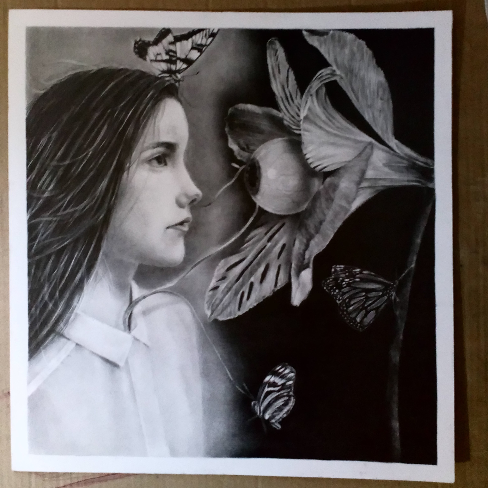
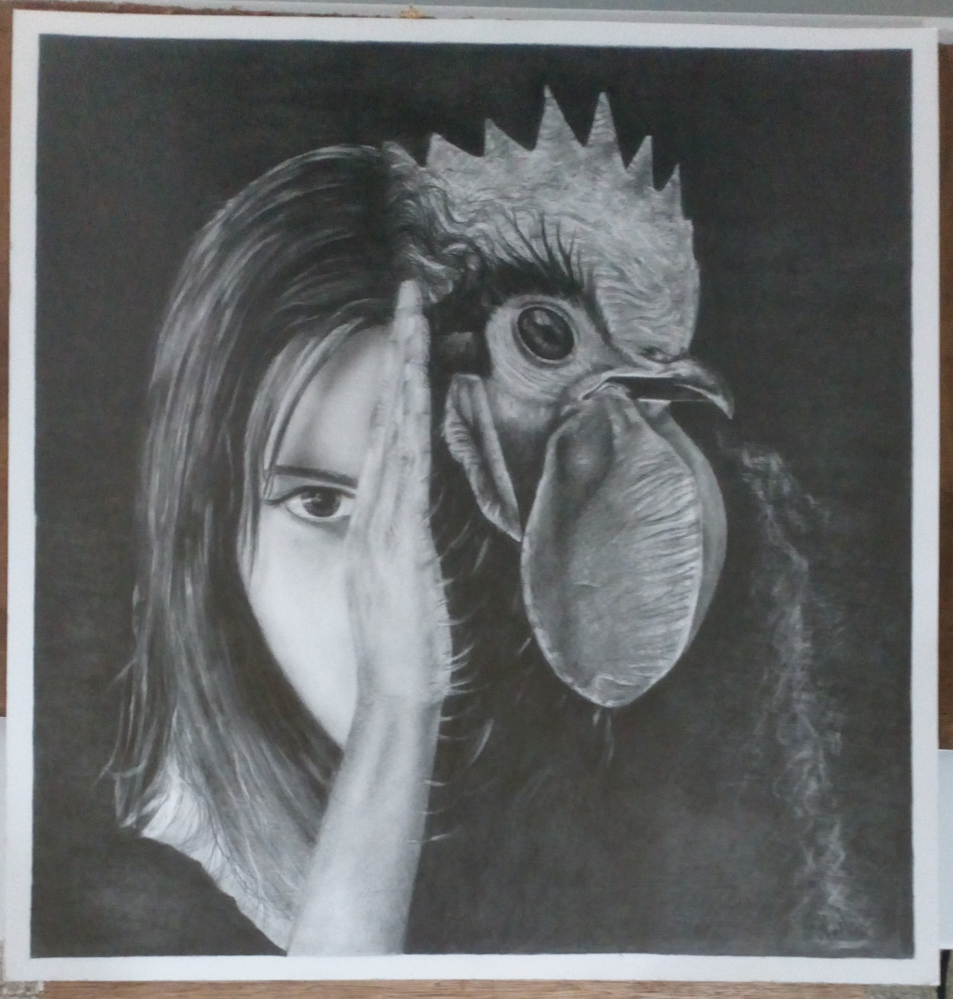
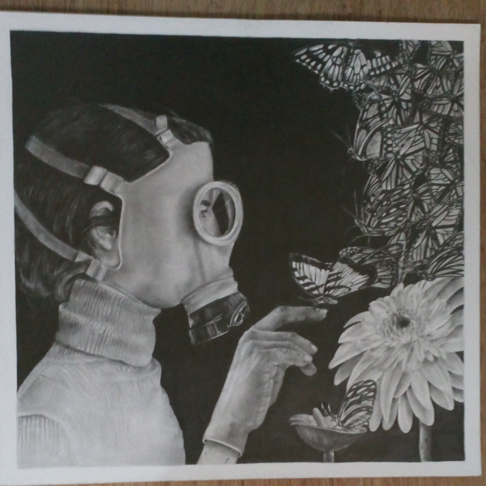

Esta serie fue creada con el objetivo de plasmar el desequilibrio de un individuo que presenta una enfermedad mental. La relación de algo puro, como lo es la naturaleza y su interacción con la persona. A través del dibujo plasmo pequeños universos distópicos, donde la persona ha sido encerrada en su propia mente: rostros que destilan armonía, que a pesar de estar rodeados de elementos que dictan lo contrario, es posible observar su belleza. Realizo estas obras con el fin de representar el subconsciente de una persona enferma, que presenta un desequilibrio mental, que ha decidido silenciar su mente y enterrarse en su propio pasamiento, ideando una sociedad surreal convertida en vegetal.


De la serie Analogía (tríptico).
Grafito sobre cartulina,
100 cm x 200 cm.
2020-2021

De la serie Analogía (tríptico).
Grafito sobre cartulina,
50 cm x 45 cm.
2020-2021